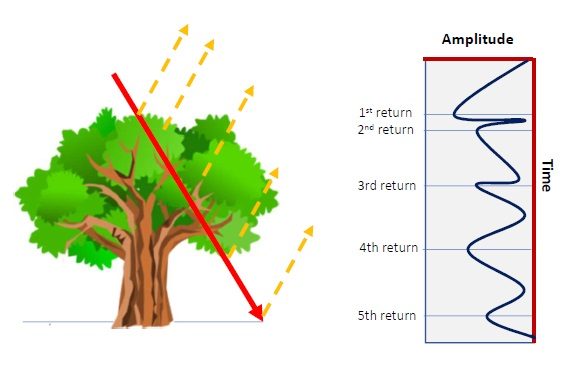
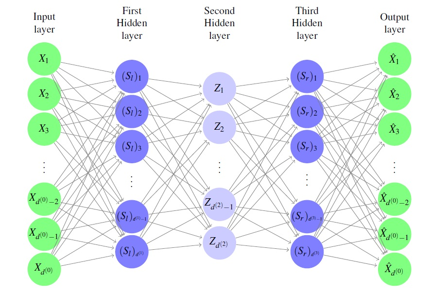

Research Interests
Numerical analysis, analysis of PDE's and deep learning
My current research is in applying rigorous mathematical concepts in machine learning. In particular, my current work builds on several projects including deep learning in geospatial data such as 3D point cloud data (LiDAR). I am interested in both the computational aspects and the mathematical aspects of deep learning. For instance, intrinsic dimension estimation (although the data may be embedded in R^D^, its intrinsic dimension (the minimum number $d$ such that the data set lies entirely within a $d$-dimensional subspace of $\mathbb{R}^D^d$, is often much smaller than $D$), which falls under the general umbrella of \underline{dimensionality reduction}. In the computation side, creating new frameworks involving generating more features by borrowing ideas from different mathematical areas such as measure theory. For example, measures defined on dyadic sets which are sets with an ordered binary tree of subsets.

Deep learning in 3D point cloud LiDAR data
I was involved in a project from a Workshop at ICERM ("Women in Data Science and Mathematics", July 17–21, 2017). We proposed a heuristic framework for testing a multi–manifold hypothesis on real–world data sets. Our method partitions a data set into subsets based on intrinsic dimension and constructs a multi–manifold that fits each subset. We tested a manifold hypothesis in a 3D LiDAR point cloud data (Light Detection and Ranging, a remote sensing method used to examine the surface of the Earth) of the Golden Gate Bridge in San Francisco. The goal is to develop a machine learning algorithm to make a classification of the LiDAR 3D point cloud data. For example, identifying vegetation, gravel, sand and other aspects of interest in the Geoscience from a single LiDAR image. My long term project is to incorporate information from LiDAR data of porous surface to my previous studies of models involving methane. In particular, we want to classify LiDAR data using an auto–encoder algorithm (deep learning). An auto–encoder neural network is an unsupervised learning algorithm that applies backpropagation, setting the target values to be equal to the inputs. We use auto–encoders combined with a neural network to classify all the points of a 3D LiDAR point cloud data into elementary, relevant classes, for example, according to their morphology. Features include spatial coordinates (x, y and z) intensity, number of returns, RGB among others. We begin by classifying all the points of the LiDAR data as ground points or non–ground points. Many classification techniques from supervised learning (e.g. convolutional neural networks) have been used to classify 3D point clouds of natural environments with good accurate results. We alsoaim to test the classification accuracy of the aforementioned unsupervised learning framework.
Solutions for climate change science: using deep learning to improve vegetation classification
Over the last decade, the Remote Sensing and Geospatial Laboratory (RSGL) from University of UW has collected and analyzed LiDAR 3D Point cloud data from different sites in Oregon and Washington through both direct–based methods (labor intensive) and indirect–based methods. LAI defined as one half of the total green leaf area per unit surface is a primary control on the exchange of energy and mass exchanges between the atmosphere and terrestrial ecosystems.Classification of forest point cloud data (PCD) generated from LiDAR into photosynthetic canopy components, non–photosynthetic canopy components and bare earth allowing the determination of woody–to–total area ratio (WTA) with the ultimate goal of obtaining accurate estimates of LAI. Our proposed solution includes engineering new features from existent ones, the use of geometrical properties of the PCD at different scales (intrinsic dimension), possible non–linear dimensionality reduction (auto–encoders), linear dimensionality reduction (PCA) and finally the use of a feed–forward neural network classifier. We would also like to include experiments with ensemble methods and random forest classifiers. Automatic classification of the forest point cloud data set will facilitate the application of TLS on retrieving 3D forest canopy structural parameters, including LAI and leaf and woody area ratios.
The evolution of Methane Hydrates.
We have considered a simplified model for evolution of methane hydrates in the hydrate zone, which includes a parameter-dependent maximum solubility constraint represented as a nonlinear complementarity constraint (for solubility). Our model consists of a single PDE and two unknowns (solubility and saturation), which are bounded by a parameter dependent family of graphs. We have already analyzed solvability and other properties of the fully discrete scheme for the model.